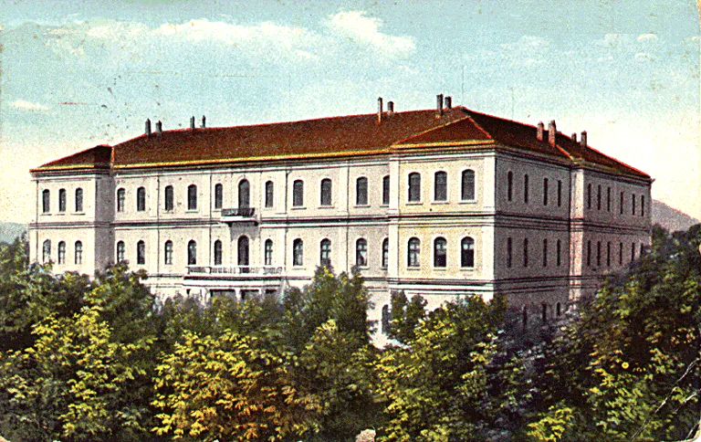
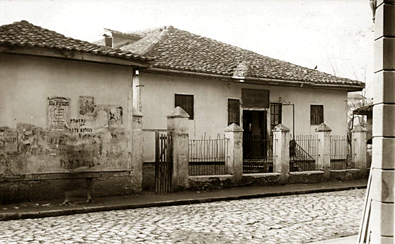
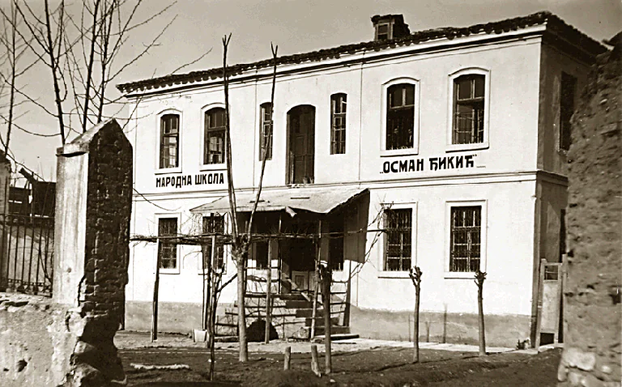
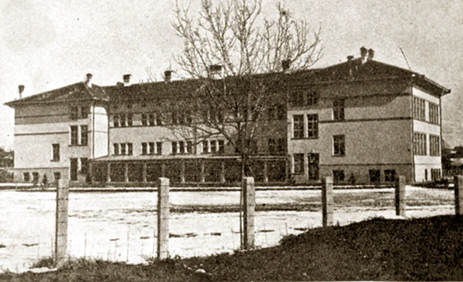
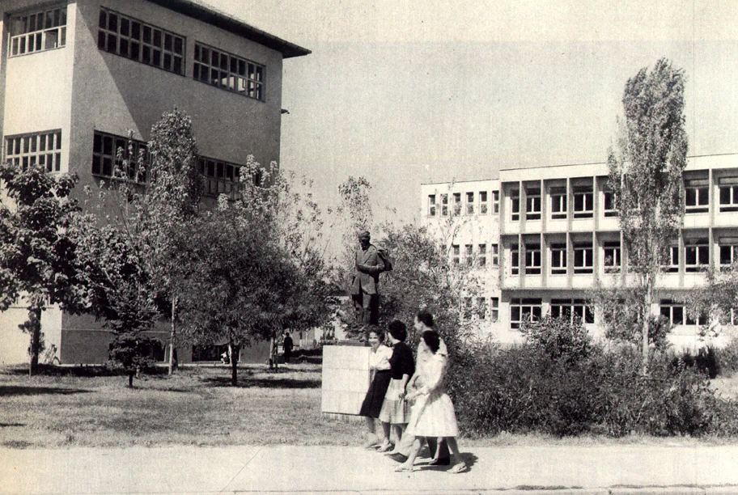

Филозофски факултет
- Реализација
- Коле Чашуле, Благоја Дрнков
- Година
- 1947
- Трајање
- 00:04

Средња школа Идадија. Изграђена крајем 19. века. У њој је настава трајала осам година и могли су да је похађају ученици свих вероисповести. Касније ова зграда постаје Учитељска школа, све до земљотреса 1963. године, у коме је много оштећена. Због тога је 1965. године срушена, а као спомен остављен је улаз зграде са четири стуба. До дана данашњег Скопљанци ту област називају Идадија. У позадини је Школа за уметност и занате.

Учитељска школа (1920-их)

Део градског парка са зградом занатске школе. (1920-их)

Зграда средње школе Идадија, а после Другог светског рата „Учитељске школе“, која је разрушена у катастрофалном земљотресу 26. јула 1963. године.

Уметничко-занатска школа, изграђена крајем 19. века. Налазила се у непосредној близини Учитељске школе. У земљотресу 1963. године знатно је оштећена, због чега је срушена.

Скопски универзитет 1920. год. на кеју Вардара. У њему је био смештен Филозофски факултет као део Београдског универзитета.

Скопски универзитет 1920. год. на кеју Вардара. У њему је био смештен Филозофски факултет као део Београдског универзитета.

Дворишна зграда мушке гимназије. (1912. година)

Скопска мушка гимназија изграђена 1902-04. године. Одликује се неокласичним елементима. У првом плану је улица „Поенкаре“, касније „Лењинградска“.

Мушка гимназија, изграђена 1902. године.

Велика медреса, у улици Илинденска (1920-их)

Основна школа „Св. Богородица“ - 1920-их.

Основна школа „Јован Скерлић“ - 1920-их.

Трећа народна основна школа (1920-их)

Српско-јеврејска основна школа у Јеврејској махали.
(крај 19. века)

Основна школа „Ђура Јакшић“ (1920-их)

Народна основна школа „Краљица Марија“ - 1920-их.

Основна школа „Цар Душан“, поред зграде Мацура на градском тргу - 1920-их.
Основна школа „Цар Душан“, поред зграде Мацура на градском тргу - 1920-их.

Основна школа „Бранко Радичевић“ - 1920-их.

Народна школа „Љуба Ковачевић“ - 1920-их.

Народна школа „Владимир Карић“ - 1920-их.

Народна школа „Доситеј Обрадовић“, у махали Саук чешма - Чаир - 1920-их.

Основна школа „Вук Стефановић Караџић“ - 1920-их.

Народна школа „Мехмед Соколовић“ - 1920-их.

Народна школа „Осман Џикић“ - 1920-их.

Трговачка академија - 1920-их.

Трговачка академија - 1920-их.

Двориште мушке гимназије - 1920-их.

Нова зграда основне школе „Доситеј Обрадовић“, изграђене 1930-их.

Основна школа „Гоце Делчев“. (фотографисано 1934. године)

Основна школа „Гоце Делчев“. (фотографисано око 1950. године)

Женска гимназија - ноћу. У првом плану је споменик ослободиоцима Скопља. (око 1950-их)

Женска гимназија, изграђена 1930-их, а фотографија је из 1950-их. Испред зграде је споменик „Ослободиоцима Скопља“

Природно-математички факултет - 1950-их

Основна школа „11. октобар“ - 1960-их

Технички факултет - 1960-их

Филмски преглед бр. 10
 Аквадукт4 разгледнице
Аквадукт4 разгледнице Кале30 разгледница
Кале30 разгледница Мостови60 разгледница
Мостови60 разгледница Кеј58 разгледница
Кеј58 разгледница Трг46 разгледница
Трг46 разгледница Објекти66 разгледница
Објекти66 разгледница Хришћански храмови19 разгледница
Хришћански храмови19 разгледница Муслимански објекти33 разгледнице
Муслимански објекти33 разгледнице Официрски дом29 разгледница
Официрски дом29 разгледница Позориште28 разгледница
Позориште28 разгледница Железничка станица13 разгледница
Железничка станица13 разгледница Школе36 разгледница
Школе36 разгледница Паркови12 разгледница
Паркови12 разгледница Пијаце18 разгледница
Пијаце18 разгледница Улице38 разгледница
Улице38 разгледница Панорама I60 разгледница
Панорама I60 разгледница Панорама II30 разгледница
Панорама II30 разгледница Колажи55 разгледница
Колажи55 разгледница Поплаве9 разгледница
Поплаве9 разгледница Земљотрес27 разгледница
Земљотрес27 разгледница Скопље 200026 разгледница
Скопље 200026 разгледница